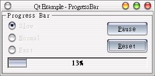

QProgressBar常用來顯示目前的工作進度，例如程式安裝、檔案複製、下載等，這個範例取自Qt的線上說明範例，功能為示範QProgressBar的作用、練習如何取得QRadioButton的狀態，以及如何設定QTimer的執行時間等。
這個程式會配置三個單選鈕、兩個按鈕與一個進度顯示，選擇不同速度的選項再按下按鈕，進度顯示的進度會有不同速度的顯示。
首先編輯定義檔progressbar.h：
#ifndef PROGRESSBAR_H
#define PROGRESSBAR_H
#include <qbuttongroup.h>
#include <qtimer.h>
class QRadioButton;
class QPushButton;
class QProgressBar;
class ProgressBar : public QButtonGroup
{
Q_OBJECT
public:
ProgressBar( QWidget *parent = 0, const char *name = 0 );
protected:
QRadioButton *slow, *normal, *fast;
QPushButton *start, *pause, *reset;
QProgressBar *progress;
QTimer timer;
protected slots:
void slotStart();
void slotReset();
void slotTimeout();
};
其中slotStart()用來開始QProgressBar，slotReset()用來重置程式的狀態，而slotTimeout()在QTimer設定的時間計時完畢後會執行，這些都將使用Signal - Slot機制來呼叫。
再來編輯qprogressbar.cpp：
#include "progressbar.h"
#include <qradiobutton.h>
#include <qpushbutton.h>
#include <qprogressbar.h>
#include <qlayout.h>
#include <qmotifstyle.h>
/*
* Constructor
*
* Creates child widgets of the ProgressBar widget
*/
ProgressBar::ProgressBar( QWidget *parent, const char *name )
: QButtonGroup( 0, Horizontal, "Progress Bar", parent, name ), timer()
{
setMargin( 10 );
QGridLayout* toplayout = new QGridLayout( layout(), 2, 2, 5);
setRadioButtonExclusive( TRUE );
// insert three radiobuttons which the user can use
// to set the speed of the progress and two pushbuttons
// to start/pause/continue and reset the progress
slow = new QRadioButton( "S&low", this );
normal = new QRadioButton( "&Normal", this );
fast = new QRadioButton( "&Fast", this );
QVBoxLayout* vb1 = new QVBoxLayout;
toplayout->addLayout( vb1, 0, 0 );
vb1->addWidget( slow );
vb1->addWidget( normal );
vb1->addWidget( fast );
// two push buttons, one for start, for for reset.
start = new QPushButton( "&Start", this );
reset = new QPushButton( "&Reset", this );
QVBoxLayout* vb2 = new QVBoxLayout;
toplayout->addLayout( vb2, 0, 1 );
vb2->addWidget( start );
vb2->addWidget( reset );
// Create the progressbar
progress = new QProgressBar( 100, this );
// progress->setStyle( new QMotifStyle() );
toplayout->addMultiCellWidget( progress, 1, 1, 0, 1 );
// connect the clicked() SIGNALs of the pushbuttons to SLOTs
connect( start, SIGNAL( clicked() ), this, SLOT( slotStart() ) );
connect( reset, SIGNAL( clicked() ), this, SLOT( slotReset() ) );
// connect the timeout() SIGNAL of the progress-timer to a SLOT
connect( &timer, SIGNAL( timeout() ), this, SLOT( slotTimeout() ) );
// Let's start with normal speed...
normal->setChecked( TRUE );
// some contraints
start->setFixedWidth( 80 );
setMinimumWidth( 300 );
}
/*
* SLOT slotStart
*
* This SLOT is called if the user clicks start/pause/continue
* button
*/
void ProgressBar::slotStart()
{
// If the progress bar is at the beginning...
if ( progress->progress() == -1 ) {
// ...set according to the checked speed-radiobutton
// the number of steps which are needed to complete the process
if ( slow->isChecked() )
progress->setTotalSteps( 10000 );
else if ( normal->isChecked() )
progress->setTotalSteps( 1000 );
else
progress->setTotalSteps( 50 );
// disable the speed-radiobuttons
slow->setEnabled( FALSE );
normal->setEnabled( FALSE );
fast->setEnabled( FALSE );
}
// If the progress is not running...
if ( !timer.isActive() ) {
// ...start the timer (and so the progress) with a interval of 1 ms...
timer.start( 1 );
// ...and rename the start/pause/continue button to Pause
start->setText( "&Pause" );
} else { // if the prgress is running...
// ...stop the timer (and so the prgress)...
timer.stop();
// ...and rename the start/pause/continue button to Continue
start->setText( "&Continue" );
}
}
/*
* SLOT slotReset
*
* This SLOT is called when the user clicks the reset button
*/
void ProgressBar::slotReset()
{
// stop the timer and progress
timer.stop();
// rename the start/pause/continue button to Start...
start->setText( "&Start" );
// ...and enable this button
start->setEnabled( TRUE );
// enable the speed-radiobuttons
slow->setEnabled( TRUE );
normal->setEnabled( TRUE );
fast->setEnabled( TRUE );
// reset the progressbar
progress->reset();
}
/*
* SLOT slotTimeout
*
* This SLOT is called each ms when the timer is
* active (== progress is running)
*/
void ProgressBar::slotTimeout()
{
int p = progress->progress();
#if 1
// If the progress is complete...
if ( p == progress->totalSteps() ) {
// ...rename the start/pause/continue button to Start...
start->setText( "&Start" );
// ...and disable it...
start->setEnabled( FALSE );
// ...and return
return;
}
#endif
// If the process is not complete increase it
progress->setProgress( ++p );
}
最後編輯主函式main.cpp：
#include "progressbar.h"
#include <qapplication.h>
int main(int argc,char **argv)
{
QApplication a(argc,argv);
ProgressBar progressbar;
progressbar.setCaption("Qt Example - ProgressBar");
a.setMainWidget(&progressbar);
progressbar.show();
return a.exec();
}
同樣的，程式碼很長，但主要還是花費在配置上（視窗程式都是如此），而一些判斷語法其實也不難，只要知道各個元件的幾個方法是什麼作用，就可以簡單的解讀這個程式了；以下我們解說一些重要的語法與方法，layout()是由QLayout所繼承下來的方法，它會傳回目前類別的Layout，我們將使用2x2的QGridLayout版面配置，spacing設定為5：
QGridLayout* toplayout = new QGridLayout( layout(), 2, 2, 5);
到以下這兩行前的程式碼主要都是有作版面配置，希望您已經可以自行看懂了，因為這之前都說明過了；以下這兩行我們將QProgressBar設定為最大進度100%，並將其橫跨在QGridLayout的(1, 1)與(0, 1)兩個Grid上：
progress = new QProgressBar( 100, this );
toplayout->addMultiCellWidget( progress, 1, 1, 0, 1 );
下面這三行不用說都知道在作Signals與Slots的連接，其中Signal - timeout()是QTimer計時逾期時所發出的Signal，這與我們之前範例使用QTimerEvent的方式有所不同：
// connect the clicked() SIGNALs of the pushbuttons to SLOTs
connect( start, SIGNAL( clicked() ), this, SLOT( slotStart() ) );
connect( reset, SIGNAL( clicked() ), this, SLOT( slotReset() ) );
// connect the timeout() SIGNAL of the progress-timer to a SLOT
connect( &timer, SIGNAL( timeout() ), this, SLOT( slotTimeout() ) );
我們可以使用QProgressBar的progress()方法來取得它目前的進度狀態，在QRadioButton方面，我們
使用isChecked() 來測試其是否在選取狀態；在這個程式中，我們使用一個QTimer不斷發出Signal -
timerout()，時間間隔設定為1毫秒（0.001秒）發出一次，而藉由設定QProgressBar的Step，使得Step總計數不同，所以相
對的在相同的時間間隔下，每完成一個Step的進度就不同，所以可以製作出不同速度的進行表示：
// If the progress bar is at the beginning...
if ( progress->progress() == -1 ) {
// ...set according to the checked speed-radiobutton
// the number of steps which are needed to complete the process
if ( slow->isChecked() )
progress->setTotalSteps( 10000 );
....
QTimer的isActive()方法可用來測試QTimer是否啟動，start()方法會放動QTimer，傳入數值1表示設定每間隔1毫秒發出
Signal - timetout()，使用stop()方法的話可以停止目前的QTimer繼續發出Signal - timerout()：
if ( !timer.isActive() ) {
// ...start the timer (and so the progress) with a interval of 1 ms...
timer.start( 1 );
// ...and rename the start/pause/continue button to Pause
start->setText( "&Pause" );
} else { // if the prgress is running...
// ...stop the timer (and so the prgress)...
timer.stop();
// ...and rename the start/pause/continue button to Continue
start->setText( "&Continue" );
}
QProgressBar的reset()方法會重置它的進度至未開始的狀態：
// reset the progressbar
progress->reset();
QProgressBar的totalSteps()可以取得所設定的總Step數，將之與目前的Step數相比，如果相等就表示
進度完成，此時作完一些設定動作後離開函式，否則就將目前的Step數加1，再使用setProgress()重新指定給QProgressBar：
void ProgressBar::slotTimeout()
{
int p = progress->progress();
#if 1
// If the progress is complete...
if ( p == progress->totalSteps() ) {
// ...rename the start/pause/continue button to Start...
start->setText( "&Start" );
// ...and disable it...
start->setEnabled( FALSE );
// ...and return
return;
}
#endif
// If the process is not complete increase it
progress->setProgress( ++p );
}
在大部份的程式碼都解說過後，我們來看一下執行的畫面：

|
|